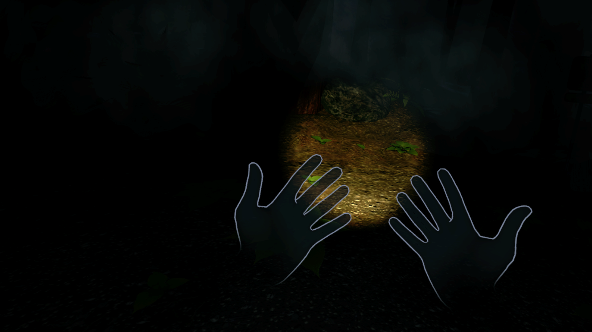
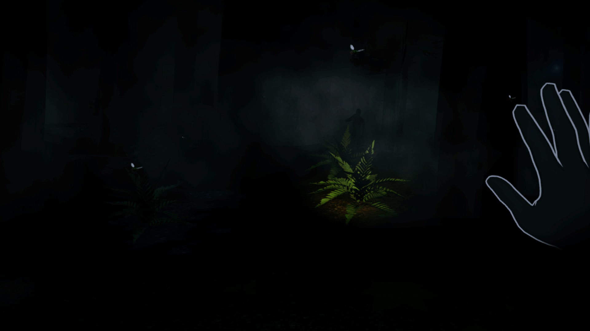
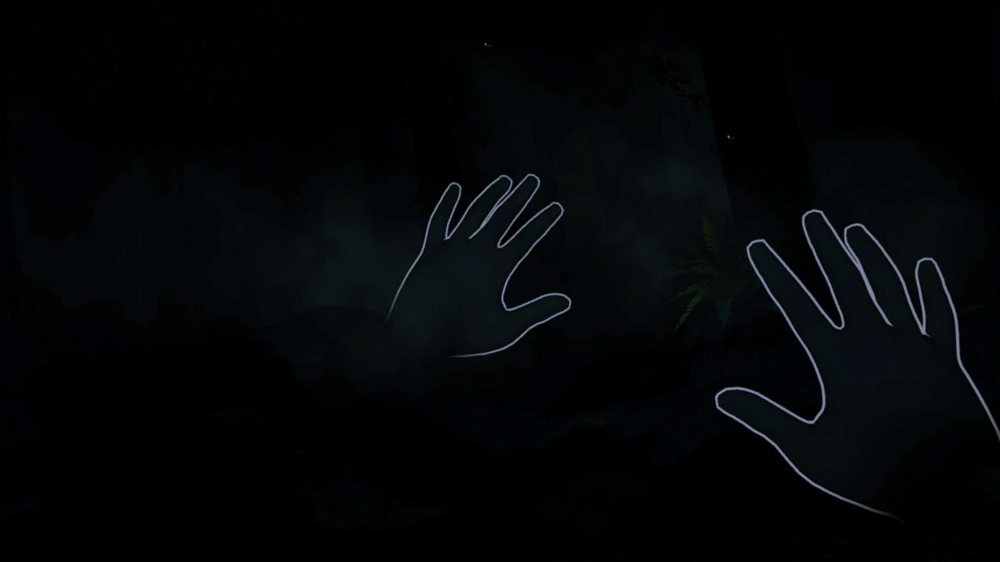
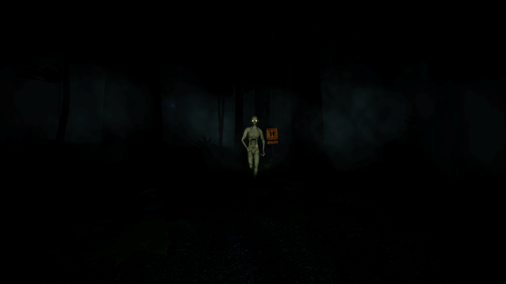
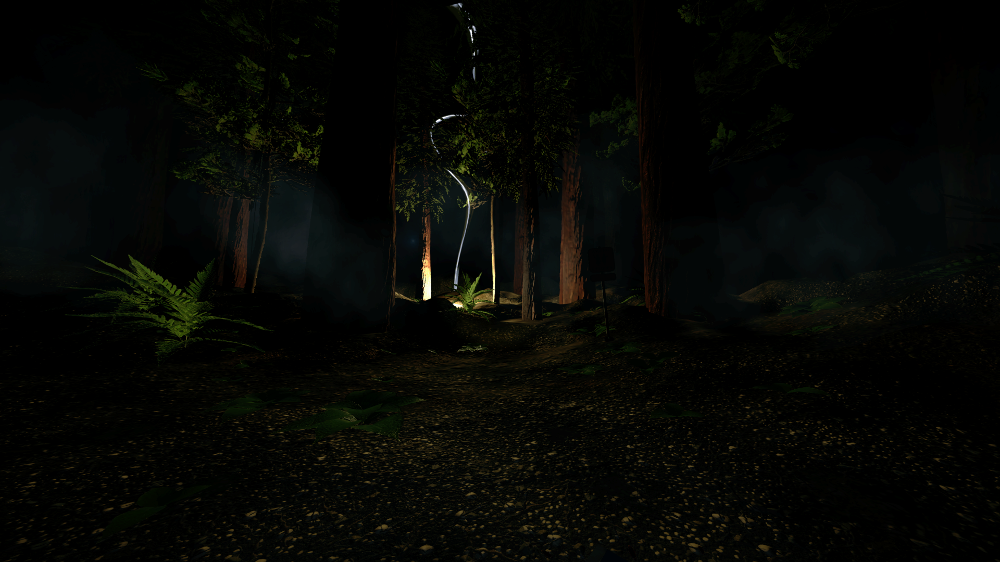
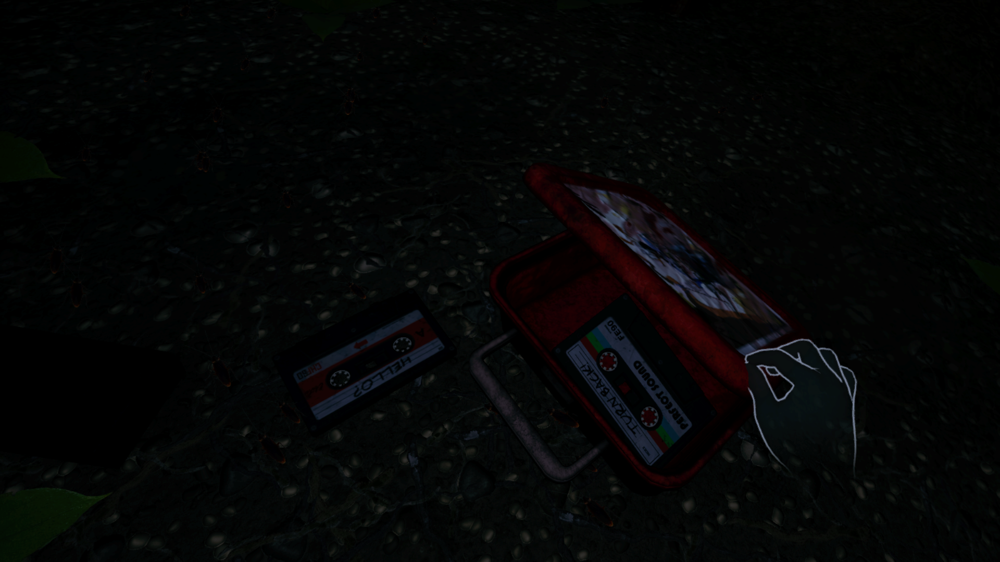
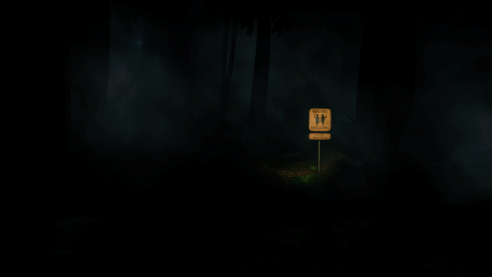
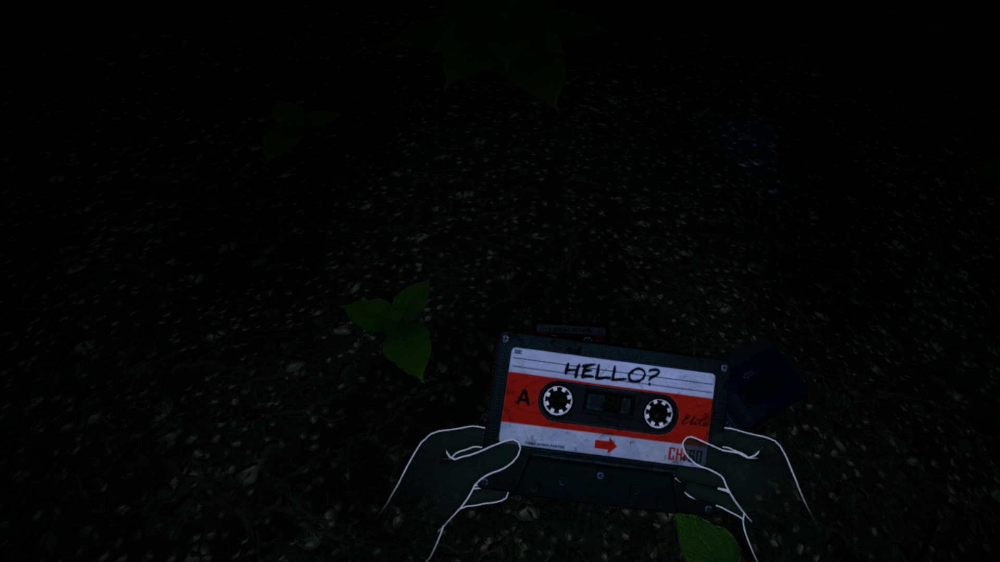
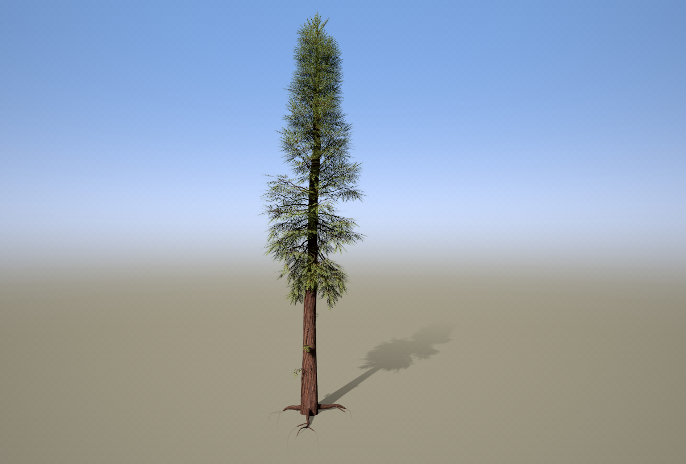

Environment Art — VR Horror
A VR horror environment focused on atmosphere, environmental storytelling and player interaction, developed for Meta Quest 3.
Please Wave Back is an independently developed VR horror prototype created in Unity 6 for Meta Quest 3 as part of my final-year research project, awarded Best Independent Project 2026 at the University of Gloucestershire. I developed the project across environment art, level design, interactive experience design, lighting, VFX, audio and technical implementation. The project demonstrates my approach to building atmospheric, playable environments while working within the technical constraints of standalone VR.
"The project demonstrates how environment art, interaction and atmosphere can work together to create a cohesive player experience."
Gameplay footage showcasing the finished VR environment, interactions and atmospheric systems.
These frames show the same world from different emotional angles: calm, threatening, and intimate.








Technical breakdowns covering environment art, vegetation, materials, lighting and interactive experience design.

The forest environment combines custom assets, vegetation, materials and environment dressing to create a cohesive and atmospheric setting. SpeedTree was used to create and optimise the vegetation, with LODs and billboard representations used to maintain visual quality across viewing distances. Vegetation placement was also used to control sightlines and frame areas of interest.
Custom ground materials were created in Substance Designer to introduce variation and surface detail while maintaining a consistent visual style. Materials were developed for real-time VR, balancing surface quality with texture memory and performance requirements.
Bespoke props were modelled, textured and dressed throughout the environment to establish the setting and provide visual points of interest. Prop placement and set dressing were used to support environmental storytelling while maintaining a consistent visual language across the scene.
Lighting was designed to establish mood, control visibility and direct player attention throughout the environment. Dynamic lighting, volumetric fog and atmospheric effects were combined to create depth and controlled visibility. Lightning effects were created using Unity VFX Graph and integrated with the wider environmental systems.
The experience was designed around exploration, observation and player response, using environment layout and interactive systems to control pacing and tension. The Watcher responds directly to player behaviour, creating a clear cause-and-effect relationship between player actions and the environment. Sightlines, encounters and feedback were designed together to create a cohesive player experience.
Real-time VFX and spatial audio were used to make the environment feel reactive and reinforce atmosphere. Bats, lightning and environmental effects were created using Unity VFX Graph, adding movement and unpredictability to the environment. Spatial audio, ambient forest sounds and thunder reinforced environmental awareness and complemented the visual design.